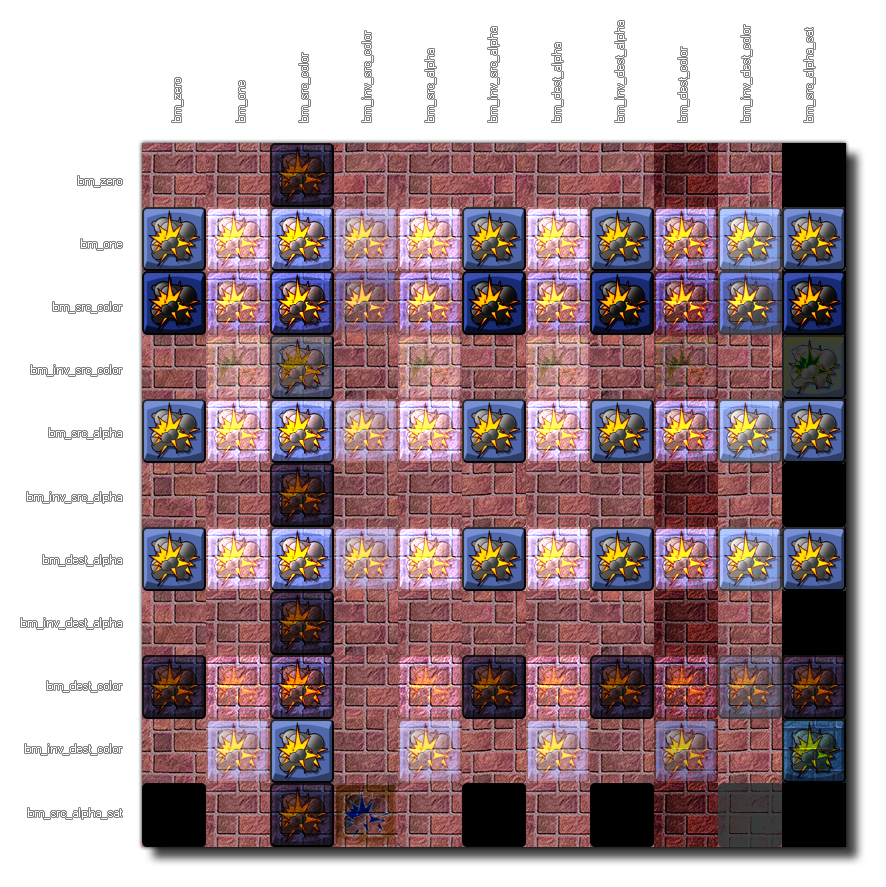

When GameMaker Studio 2 goes to draw a pixel there is a source colour (the colour of the pixel we're going to draw) and a destination colour(the colour that's already in the pixel we're drawing to), so when determining the new colour of the pixel, the source and destination colours are calculated according to the chosen blend mode. Each component of the colours is stored as a floating point value between 0 and 1, and the new colour is calculated by multiply each component of the source colour by some factor and by multiplying each component of destination colour by some other factor and then adding the results together component by component.
This function permits you to set the different component parts that should be factored together to create a custom blend mode. The source and destination both have a red, green, blue and alpha component, and in the following chart the source's RGBA are considered (Rs, Gs, Bs, As) while the destination's are (Rd, Gd, Bd, Ad). The eleven constants that are available for use can be either source or destination (or both) when used in this function.
常量 Blend factor (Red, Green, Blue, Alpha) bm_zero (0, 0, 0, 0) bm_one (1, 1, 1, 1) bm_src_colour (Rs, Gs, Bs, As) bm_inv_src_colour (1-Rs, 1-Gs, 1-Bs, 1-As) bm_src_alpha (As, As, As, As) bm_inv_src_alpha (1-As, 1-As, 1-As, 1-As) bm_dest_alpha (Ad, Ad, Ad, Ad) bm_inv_dest_alpha (1-Ad, 1-Ad, 1-Ad, 1-Ad) bm_dest_colour (Rd, Gd, Bd, Ad) bm_inv_dest_colour (1-Rd, 1-Gd, 1-Bd, 1-Ad) bm_src_alpha_sat (f, f, f, 1) where f = min(As, 1-Ad) Note that you can either supply two individual arguments to this function or you can supply an array of arguments (as returned by the function gpu_get_blendmode_ext for example). If supplying an array it should have the following two elements:
- [0] = Source blend mode (default is bm_src_alpha)
- [1] = Destination blend mode (default is bm_inv_src_alpha)
It can be quite difficult to visualise how these different blend modes work, so below you can find a simple chart that shows the basic interaction of a single sprite being drawn with different combinations of blend modes over a single background. Please note that the actual results of the blend mode you use will very much depend on the colour in the sprite, the alpha value of the sprite and the colour and alpha of the background. 
WARNING!: Not all blend modes are available on all platforms. Android, Tizen, iOS, and HTML5 without WebGL enabled will not be able to display the following modes correctly:
- bm_src_colour
- bm_inv_src_colour
- bm_dest_colour
- bm_inv_dest_colour
- bm_src_alpha_sat
gpu_set_blendmode(src, dest);
参数 描述 源 Source blend mode factor(see constants above). 目标 Destination blend mode factor (see constants above)
N/A（无返回值）
gpu_set_blendmode_ext(bm_src_alpha, bm_one);
draw_circle_colour(100, 100, 50, c_white, c_black, 0);
gpu_set_blendmode(bm_normal);
This will turn the black into transparency, creating a 'glow' effect from the white being strong on the outside and gradually weakening further from the circle centre. The blend mode is reset after the circle is drawn to ensure additive blending is not also applied to everything else after it.